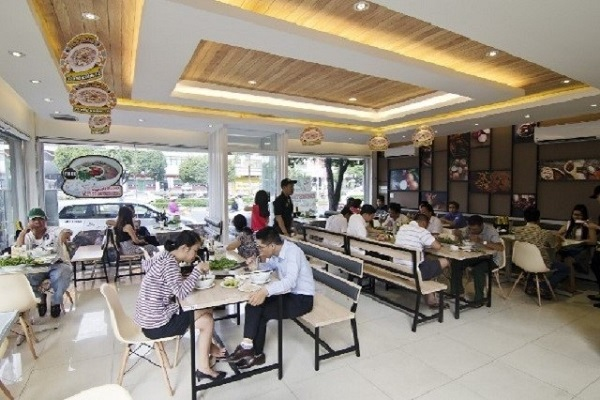

フォーはベトナムを代表する国民的料理です。 ベトナム人にとってソウルフードであり、 一日3食フォーで済ませる人もいるほど生活に密着している料理です。 路上の屋台からレストラン、 ホテルの朝食などベトナムのあらゆるところでフォーは食べられています。 原材料は米粉とスープで、日本ではうどんに似ていることからベトナムうどんとも呼ばれています。 日本のうどんの中でも特に名古屋のきしめんに似ています。1年で米が3回も収穫されているベトナム。 特に首都のハノイ北部では稲作が盛んにおこなわれています。 そんな米粉を使った料理といえばフォーです。 屋台やレストランでどこでもフォーを食べられるほど愛されている食べ物です。 ただ、ベトナムの一般家庭で作られることは少なく、基本的にはフォーは外食の食べ物なのです。 フォーは米麺といって水に漬けた米粉をペースト状にして金属板の上で熱したものを麺に形状にします。 米粉と水を練りこみ、平らな麺が特徴で、麺の細さは日本のうどんを少し細くしたほどです。 原材料は米粉とスープで、日本ではうどんに似ていることからベトナムうどんとも呼ばれています。
ベトナム・ハノイで絶大な人気を誇るフォーの名店が このたび日本に初上陸。現地の人も行列をつくる人 気ぶり、メニューは1種類だけという職人魂。 牛や豚骨をじっくり煮込んだ自慢の極上スープ。 ヘルシーな米麺とほやほやの牛肉、 味の決め手はシャキシャキのネギ、 もうお箸を持つ手が止まりません。 途中から秘伝のチリソースやライムを入れて 味の変化を楽しむのも本場ならでは。 最後の一滴まで飲み干せるやさしい旨味で お腹もココロも満たされていくことでしょう。 あなたのフォーの常識が、きっとくつがえされるはず

鶏のフォー 600円

牛肉のフォー 840円 (大盛り940円)
本場の味そのままの絶品フォー
※パクチー選べます

パクチー 150円

味付たまご 60円

ライム 0円

トッピングソース
秘伝チリソース0円
にんにく酢 0円

YEBISU：500円
SAPPORO 220円
GRANDKIRIN 200円
ASAHI 190円
軽井沢ビール 150円

ジュース 200円


| 名前 | Phở 博多 |
|---|---|
| 住所 | 〒812-0012 福岡県福岡市博多区博多駅中央街１−１ |
| TEL | 03-4565-1113 |
| phohakata＠gmail.com | |
| 営業時間 | 11:00～22:00 |